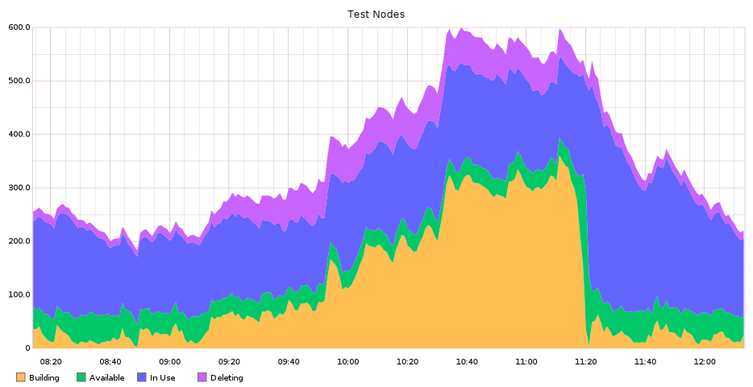

OpenStack works ... so now what?
Monty Taylor
twitter: @e_monty
Who am I?

Distinguished Technologist
HP Cloud
Who am I?

Technical Committee
Foundation Board of Directors
Developer Infrastructure Core Team
What are we going to talk about?
- OpenStack
- My application
- Your applications
As an application developer,
I want to deploy and run an application on the internet
so that my customers all over the world can consume it.
As an application developer,
I want to deploy the application across multiple clouds
so that my service survives issues in any one of them.
THIS WORKS
I'm doing it myself as we speak

10-20k VMs per-day
3 (soon to be 6) clouds
Only using OpenStack APIs
Gated Commits
Every commit is fully integration tested (twice) before landing
Each Test Runs on a Single Use Cloud Slave
This is that "cloud scale out" part
1.7 Million Test Jobs in the last 6 Months
15 Million Tests in a month
18 Terabytes of Log Data in six months
We have no servers
It all runs across HP and Rackspace Public Clouds.
Architecture

Gerrit
-
Traditional 'Enterprise' Java Application
- Single Nova VM, Cinder Volume
- Scale out farm of git replicas
Fun Numbers
- 250-500 changes every week
- 1500-3000 change revisions every week
- 10,000 new changes every 42 days
nodepool
- Cloud Native
-
Purpose built in Python
- Keeps a pool of ready to go nodes
- Multi-cloud
- Fully elastic - responds to demand
OpenStack Works!
What next?
Make it easier
Basic things you want to do
Get (make/fetch/find) a base image
Upload it to each cloud
Boot a VM on one or more of the clouds
Ensure it's on the Internet
We've made this harder than it should be
Get a base image
OpenStack diskimage-builder
packer
Download pre-built image from Ubuntu/Fedora
Problem: hypervisor image file format
-
Rackspace uses VHD
-
HP uses qcow2
-
DreamHost uses RAW
Problem: image API version
-
HP uses v1
-
vexxhost uses v2
Good news! We made a plan for this at
the summit
Problem: image task vs. PUT
swift upload --object-name local-image-filename images image-name
glance task-create
--type=import
--input='{"import_from": "images/image-name",
"image_properties" : {"name": "My Image Name"}}'
glance image-create --name=image-name --file=local-image-filename
Problem: Ensure it's on the Internet
- My VM may have a public IP
- My VM may need a floating IP from nova
- My VM may need a floating IP from neutron
VM Network with nova-network
addresses:
private:
- addr: 10.181.5.77
version: 4
public:
- addr: 2001:4800:7810:512:be76:4eff:fe05:8325
version: 6
- addr: 98.129.169.30
version: 4
VM Network with neutron
addresses:
mordred@inaugust.com-network:
- OS-EXT-IPS-MAC:mac_addr: fa:16:3e:a6:de:26
OS-EXT-IPS:type: fixed
addr: 10.0.0.6
version: 4
- OS-EXT-IPS-MAC:mac_addr: fa:16:3e:a6:de:26
OS-EXT-IPS:type: floating
addr: 15.126.239.219
version: 4
I think we can do better than that
What am I doing about it?
os-client-config
http://git.openstack.org/cgit/openstack/os-client-config
A library to handle config information for openstack clients
Tracks differences in vendors that can't be discovered
In use in python-openstackclient and ansible
shade
http://git.openstack.org/cgit/openstack-infra/shade
A library to wrap business logic around client libraries
cloud.create_image('image-name', filename='image-filename.qcow2')
cloud.create_server('my-server', image='immage-name', auto_ip=True)
In use in Infra Nodepool and ansible
ansible
Brand new modules, based on shade
Coming in 2.0 release
- os_keypair:
cloud: vexxhost
name: mordred
public_key: "{{ lookup('file', '~/.ssh/id_rsa.pub') }}"
- os_image:
cloud: vexxhost
name: Monty Ubuntu
file: ubuntu.vhd
- os_server:
cloud: vexxhost
name: my-server
flavor_ram: 1024
image: Monty Ubuntu
What should we do about it?
-
Get back to basics
-
shade existence is a bug
-
Make some decisions about divergences in the basic levels
-
Take a stand even if one of our product managers disagrees
-
Ensure that simple things are simple
Thank you!
twitter: @e_monty